专题5.1 认识方程

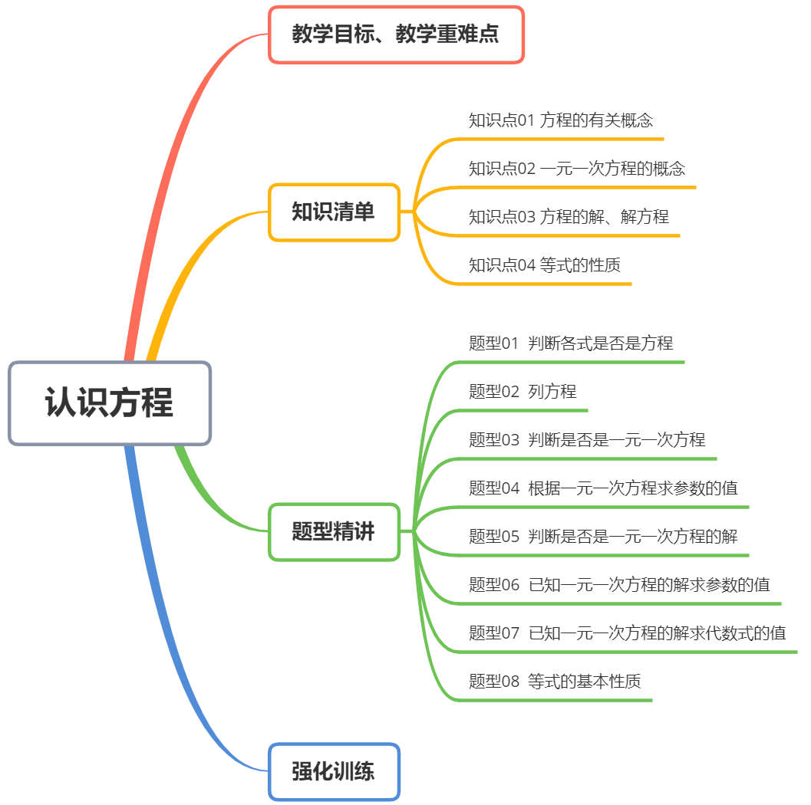

教学目标 | 1. 理解方程概念，能从实际问题中准确分析数量关系并列出方程，体会方程是刻画现实世界数量关系的有效数学模型。 2. 掌握一元一次方程的概念与解法，能熟练运用等式基本性质求解，提升运算能力与逻辑思维。 3. 深入理解等式基本性质，能依据性质对等式进行正确变形，解决相关方程问题，培养抽象概括能力 。 |
教学重难点 | 1.重点 （1）明晰方程、一元一次方程的概念，学会从实际问题里提炼数量关系列出方程。 （2）掌握等式基本性质，能利用性质求解一元一次方程 。 2.难点 （1） 从复杂实际问题中精准找出数量关系并列出方程，实现从实际问题到数学模型的转化。 （2）深入理解等式基本性质的本质，并能灵活运用其进行等式变形与方程求解 。 |

知识点01 方程的有关概念
定义：含有未知数的等式叫做方程.
【说明】判断一个式子是不是方程，只需看两点：一是等式；二是含有未知数．
【即学即练1】
1．已知下列式子： ．其中方程的个数为（ ）
．其中方程的个数为（ ）
A．3 B．4 C．5 D．6
知识点02 一元一次方程的概念
定义：只含有一个未知数（元），并且未知数的次数都是1，这样的方程叫做一元一次方程.
【说明】“元”是指未知数，“次”是指未知数的次数，一元一次方程满足条件：
①首先是一个方程；②其次是必须只含有一个未知数；③未知数的指数是1；④分母中不含有未知数．
【即学即练2】
1．下列式子：①
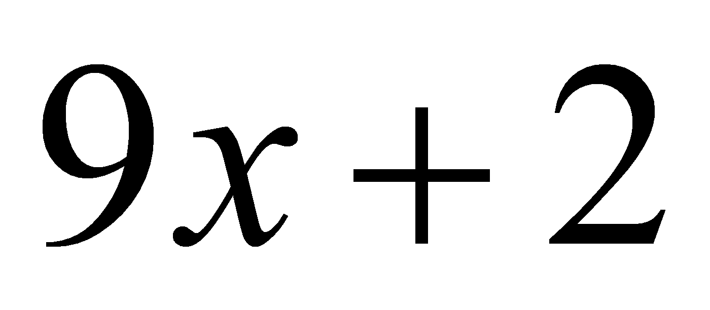
；②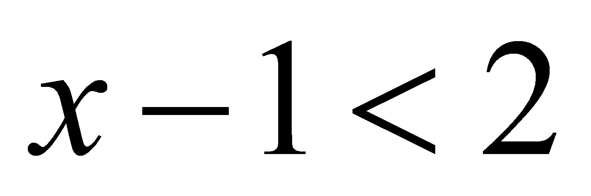
；③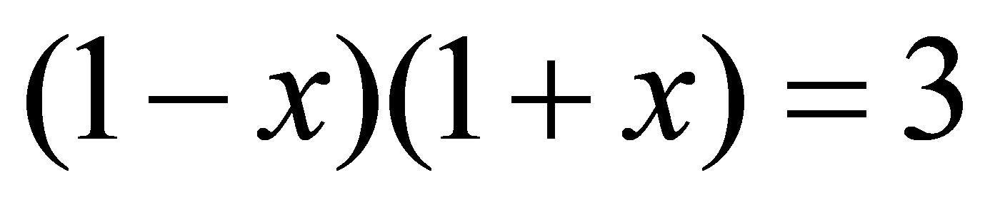
；④ ；⑤
；⑤ ；⑥
；⑥ 中，一元一次方程共有（ ）
中，一元一次方程共有（ ）A．1个 B．2个 C．3个 D．4个
2．已知关于 的方程
的方程 是一元一次方程，则实数
是一元一次方程，则实数 的取值是（ ）
的取值是（ ）
A．1 B． C．1或 D．0
C．1或 D．0
知识点03 方程的解、解方程
1.方程的解：使方程左右两边的值相等的未知数的值，叫做方程的解.
2.解方程：求方程的解的过程.
【即学即练3】
1．下列方程中，解为 的方程是（ ）
的方程是（ ）
A． B．
B．
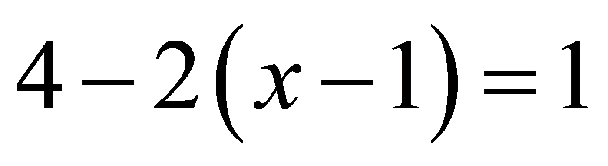
C． D．
D．
知识点04 等式的性质
性质1：等式两边加同一个数（或式子）结果仍得等式；
性质2：等式两边乘同一个数或除以一个不为零的数，结果仍得等式．
【即学即练1】
1．下面利用等式性质对等式进行变形，错误的是（ ）
A．若 ，则
，则
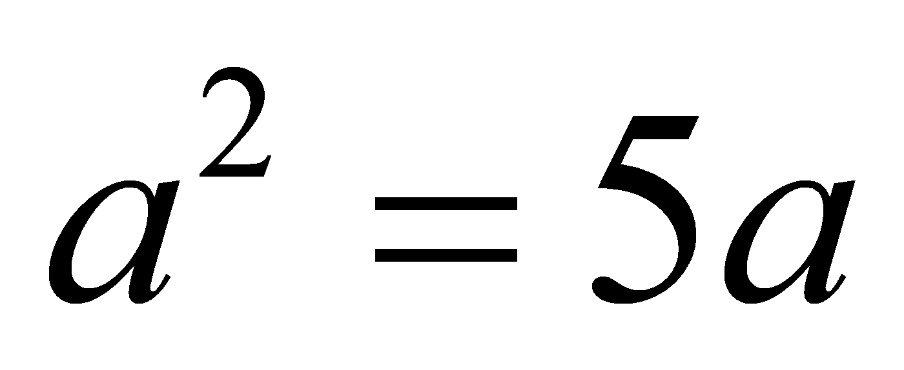
B．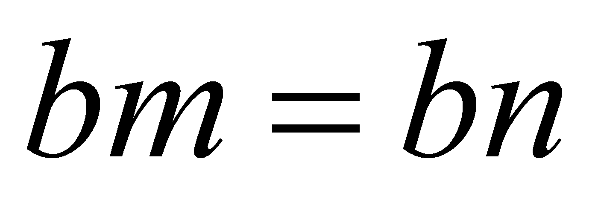
，则
C．若 ，则 D．若
，则 D．若 ，则
，则
2．运用等式性质进行的变形，下列正确的是（ ）
A．如果 ，那么
，那么 B．如果
B．如果 ，那么
，那么
C．如果，那么 D．如果
D．如果
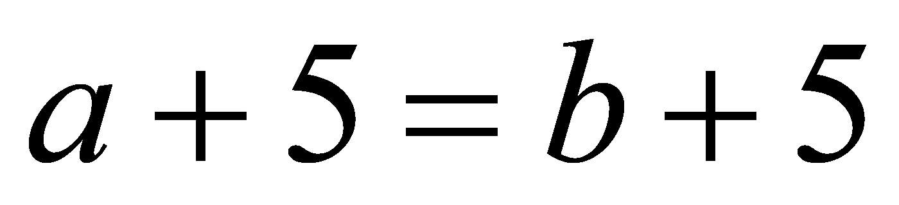
，那么
题型01 判断各式是否是方程
【典例1】下列式子中，方程的个数是（ ）
① ；②
；② ；③
；③
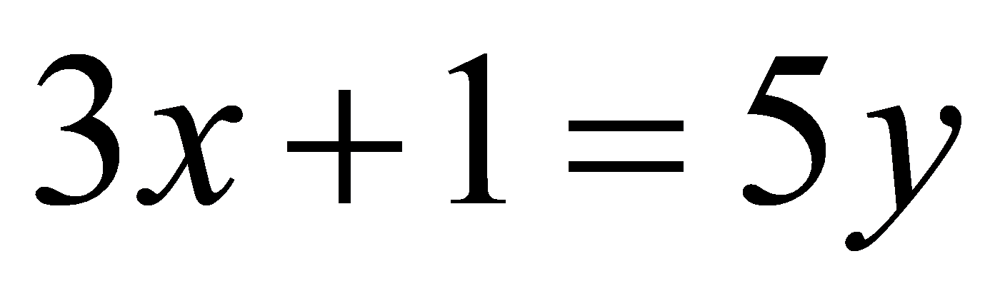
；④ ；⑤
；⑤ ；
；A．2 B．3 C．4 D．5
【变式1】在 ；
； ；
； ；
； ；
； 中，方程有（ ）个．
中，方程有（ ）个．
A．2 B．3 C．4
【变式2】下列各式 ，
， ，
， （a，b为已知数），
（a，b为已知数）， ，
， 中，方程有（ ）
中，方程有（ ）
A．1个 B．2个 C．3个 D．4个
【变式3】下列各式：①
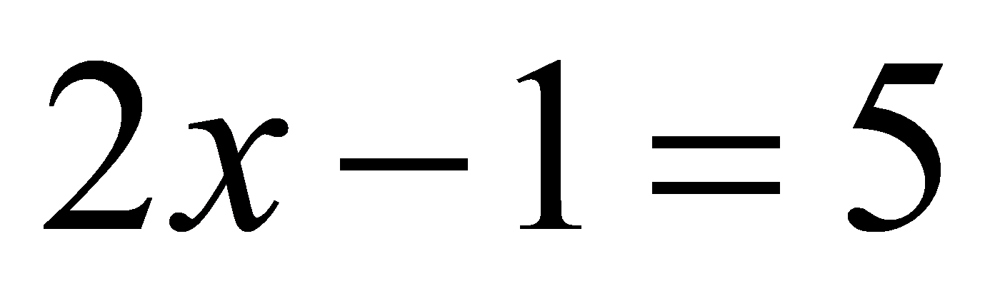
；② ；③
；③  ；④
；④  ；⑤
；⑤  ；⑥
；⑥  ；⑦
；⑦  ；⑧
；⑧  ．其中是方程的有（ ）
．其中是方程的有（ ）A．①②④⑤ B．①②⑤⑦⑧ C．①④⑦⑧ D．8 个都是
题型02 列方程
【典例2】列等式表示“的2倍与10的和等于8” ．
【变式1】设某数为x，如果某数的2倍比它的相反数大1，那么列方程是 ．
【变式2】一个长方形场地的周长为 米，长比宽的
米，长比宽的 倍少
倍少 米．如果设这个场地的宽为米，那么可以列出方程为 ．
米．如果设这个场地的宽为米，那么可以列出方程为 ．
【变式3】蛋白质和碳水化合物是我们日常饮食中的两个重要组成部分，它们都是身体所需的营养素，能够为我们提供能量，一瓶牛奶的营养成分中，碳水化合物含量是蛋白质的 倍，碳水化合物，蛋白质与脂肪的含量共
倍，碳水化合物，蛋白质与脂肪的含量共 ．设蛋白质的含量为
．设蛋白质的含量为 ，脂肪的含量为
，脂肪的含量为 ，可列出方程为 ．
，可列出方程为 ．
题型03 判断是否是一元一次方程
【典例3】下列方程是一元一次方程的是（ ）
A．
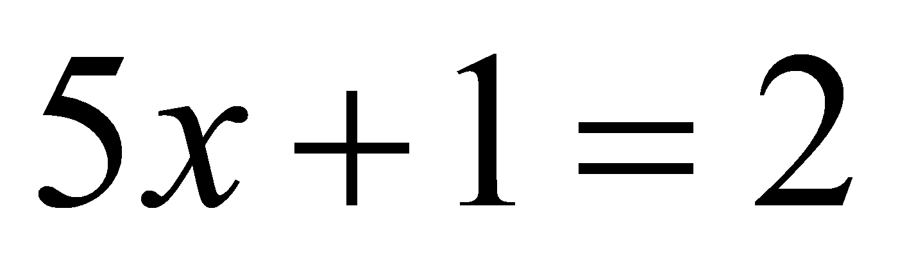
B． C．
C． D．
D．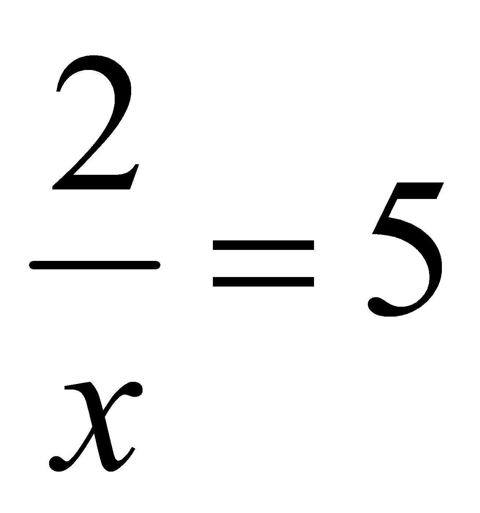
【变式1】下列方程中，是一元一次方程的是（ ）
A． B．
B． C．
C． D．
D．
【变式2】已知下列方程：（1） ；（2）
；（2） ；（3）
；（3）  ；（4）
；（4） ； （5）
； （5）
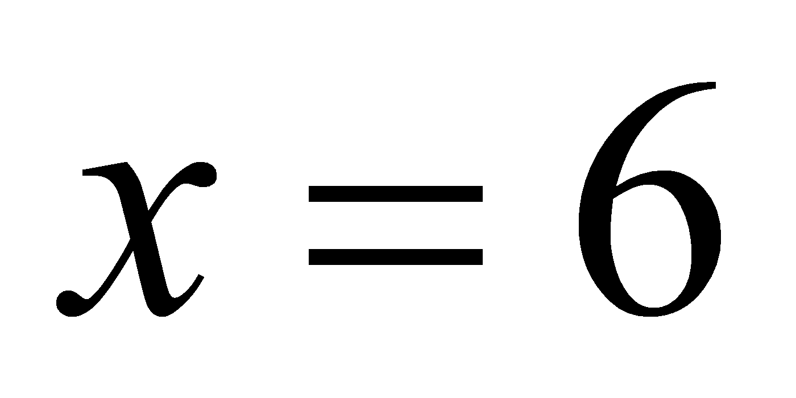
；（6）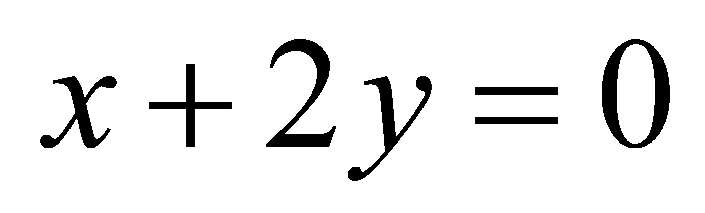
．其中一元一次方程的个数有（ ）A．2 B．5 C．4 D．3
【变式3】已知下列方程：① ；②
；② ；③
；③ ；④
；④ ；⑤
；⑤ ，其中一元一次方程有（ ）
，其中一元一次方程有（ ）
A．2个 B．3个 C．4个 D．5个
题型04 根据一元一次方程求参数的值
【典例4】已知 是关于的一元一次方程，那么
是关于的一元一次方程，那么 ．
．
【变式1】已知 是关于的一元一次方程，则
是关于的一元一次方程，则 的值为 ．
的值为 ．
【变式2】已知关于的方程 是一元一次方程，则 ．
是一元一次方程，则 ．
【变式3】若关于的方程 是一元一次方程，则的值为 ．
是一元一次方程，则的值为 ．
题型05 判断是否是一元一次方程的解
【典例5】下列方程中，解为的是（ ）
A． B．
B．
C． D．
D．
【变式1】下列方程中，解为 的是（ ）
的是（ ）
A． B．
B． C．
C． D．
D．
【变式2】下列方程中，解是 的方程是（ ）
的方程是（ ）
A． B．
B．
C． D．
D．
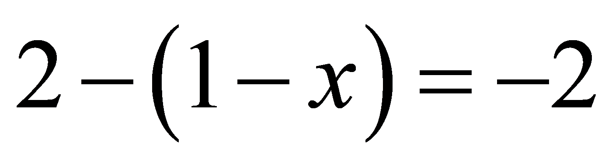
【变式3】下列方程中，解是 的是（ ）
的是（ ）
A． B．
B． C．
C． D．
D．
题型06 已知一元一次方程的解求参数的值
【典例6】若是方程 的解，则
的解，则 ．
．
【变式1】是方程 的解，则的值是 ．
的解，则的值是 ．
【变式2】若关于x的方程 的解为， 则k的值为 ．
的解为， 则k的值为 ．
【变式3】是方程 的解，则 ．
的解，则 ．
题型07 已知一元一次方程的解求代数式的值
【典例7】若是方程
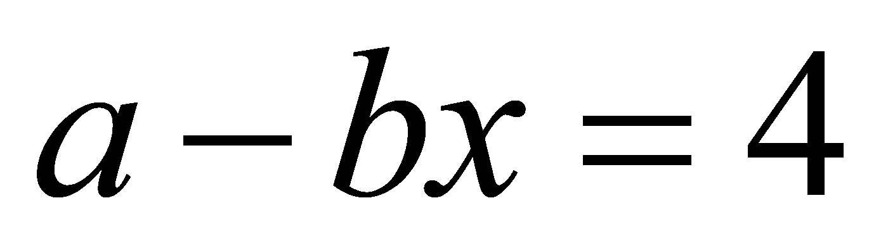
的解，则 的值为 ．
的值为 ．【变式1】若关于x的方程
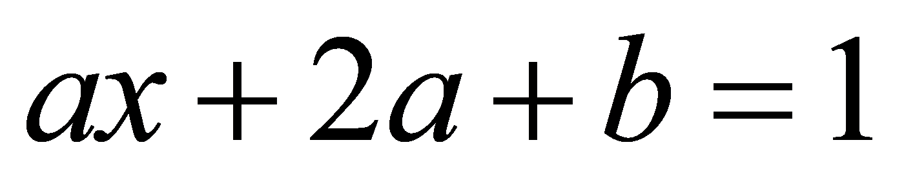
的解是 ，则
，则 的值为 ．
的值为 ．【变式2】已知关于x的一元一次方程 的解是，则
的解是，则 的值为 ．
的值为 ．
【变式3】如果 是方程
是方程 的解，那么
的解，那么 ．
．
题型08 等式的基本性质
【典例8】运用等式性质进行的变形，正确的是（ ）
A．若 ，则 B．若，则
，则 B．若，则
C．若 ，则
，则 D．若
D．若 ，则
，则
【变式1】已知等式，下列变形不正确的是（ ）
A． B．
B． C．
C． D．
D．
【变式2】下列等式变形正确的是（ ）
A．如果 ，那么
，那么 B．如果
B．如果 ，那么
，那么
C．如果 ，那么
，那么 D．如果
D．如果 ，那么
，那么
【变式3】下列说法错误的是（ ）
A．若
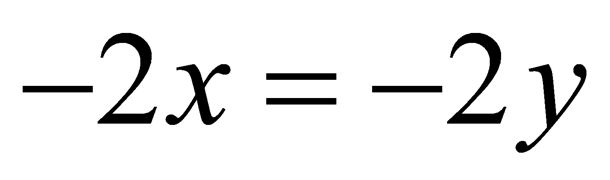
，则 B．若 ，则
，则
C．若，则 D．若
D．若 ，则
，则

一、单选题
1．（25-26七年级上·湖北武汉·期中）下列方程是一元一次方程的是（ ）
A．
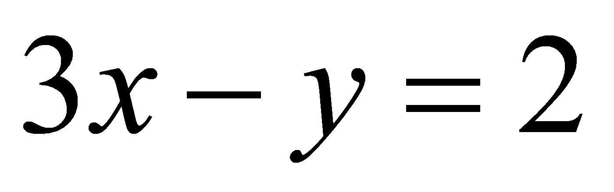
B．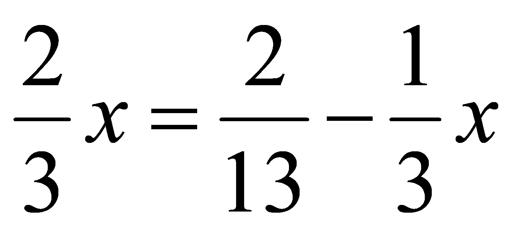
C． D．
D．
2．（25-26七年级上·重庆·期中）下列变形中，错误的是（ ）
A．若 ，则
，则 B．若
B．若
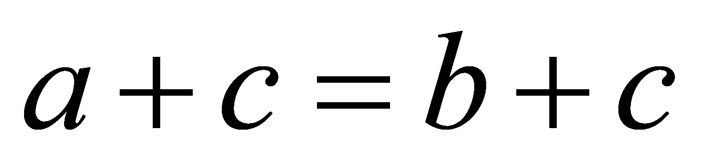
，则C．若 ，则 D．若，则
，则 D．若，则
3．（25-26七年级上·湖南长沙·期中）笑笑在做作业时，不小心将方程 中的一个常数污染了．老师告诉她方程的解是
中的一个常数污染了．老师告诉她方程的解是 ，则被污染的常数是（ ）
，则被污染的常数是（ ）
A．1 B．2 C．3 D．4
4．（25-26七年级上·黑龙江佳木斯·期中）一件商品按成本价提高 后标价，再打8折（标价的
后标价，再打8折（标价的 ）销售，售价为224元，设这件商品的成本价x元，下列方程正确的是（ ）
）销售，售价为224元，设这件商品的成本价x元，下列方程正确的是（ ）
A．
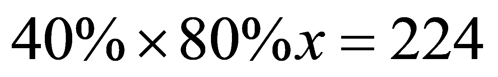
B．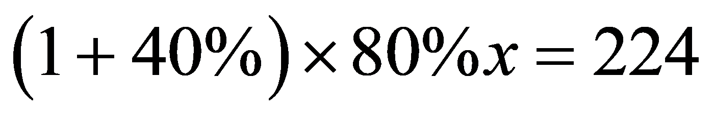
C．
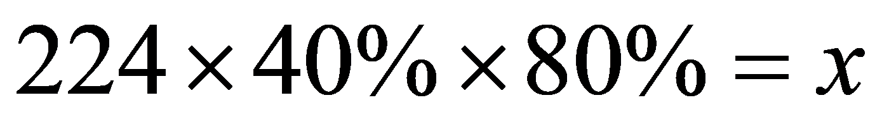
D．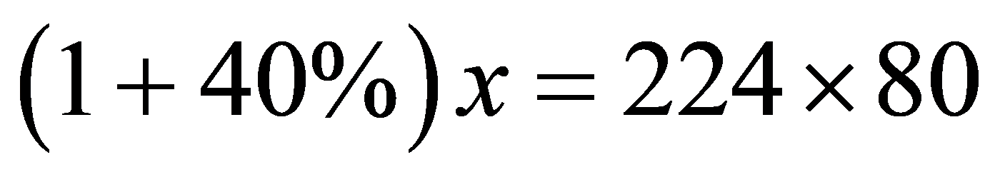
5．（25-26七年级上·湖南长沙·期中）若 是关于x的一元一次方程，则m等于（ ）
是关于x的一元一次方程，则m等于（ ）
A．1 B． C．1或0 D．0
C．1或0 D．0
6．（25-26七年级上·四川自贡·期中）如果 是关于
是关于 的方程
的方程
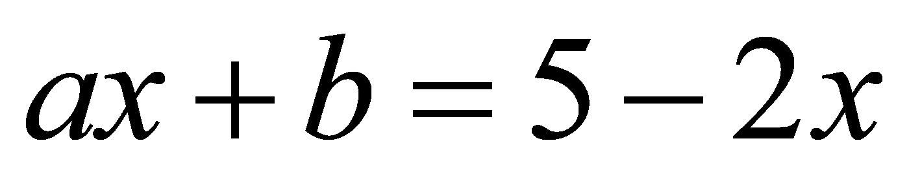
的解，求 的值为（ ）
的值为（ ）A．1 B． C．21 D．5
C．21 D．5
7．（24-25七年级上·河南郑州·期末）代数式 的值随取值的变化而变化，下表是当取不同值时对应的代数式的值，则关于的方程
的值随取值的变化而变化，下表是当取不同值时对应的代数式的值，则关于的方程
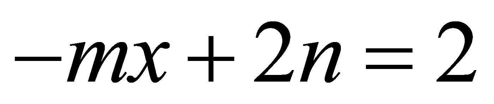
的解是（ ）
|
|
| 0 | 1 | 2 | 3 | |
| 8 | 6 | 4 | 2 | 0 |
|


A． B．
B． C．
C． D．
D．
二、填空题
8．（24-25七年级下·四川内江·期中）在方程 中，用含
中，用含 的代数式表示，可得 ．
的代数式表示，可得 ．
9．（2025七年级上·北京·专题练习）下列各式中，是等式的有 ，是方程的有 ．（填序号）
①
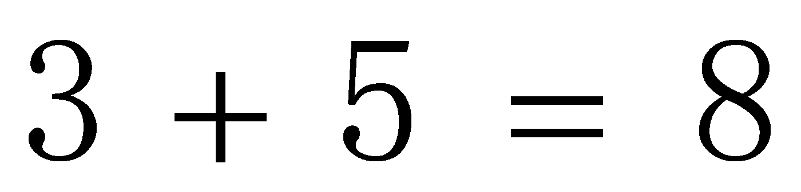
；②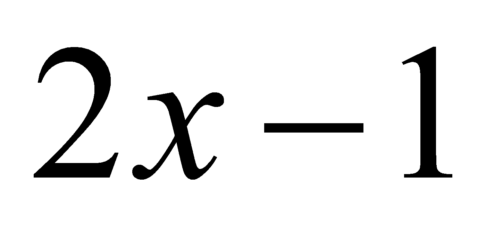
；③；④ ；⑤
；⑤ ．
．10．（2025七年级上·全国·专题练习）有下列方程：① ；②
；②
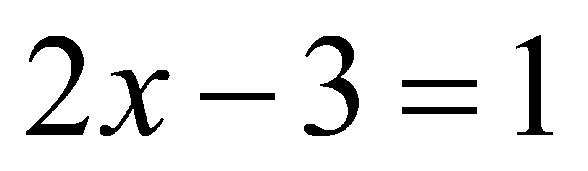
；③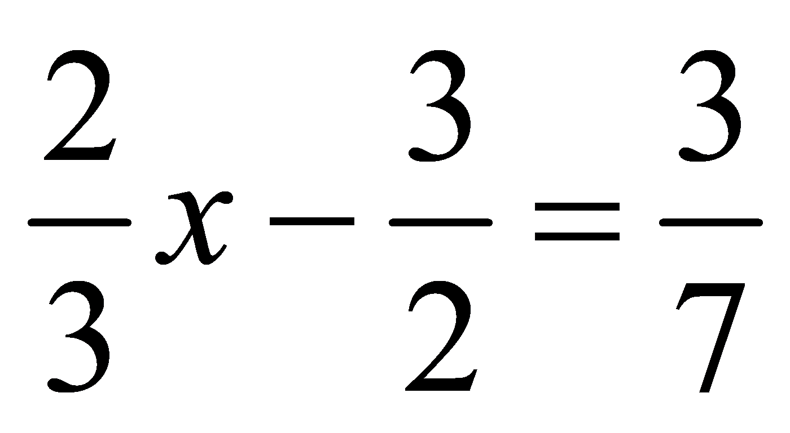
；④ ；⑤
；⑤ ；⑥
；⑥ ．其中，x＝2是其解的方程有 ．（填序号）
．其中，x＝2是其解的方程有 ．（填序号）11．（25-26七年级上·黑龙江哈尔滨·期中）若 是关于的一元一次方程，则
是关于的一元一次方程，则 的值是 ．
的值是 ．
12．（25-26七年级上·全国·课后作业）用一根绳子去量一根木头，绳子还剩余45cm；将绳子对折再量木头，木头还剩余10cm．木头长多少厘米？设木头长xcm，则可列方程为 ．
13．（24-25七年级上·河南周口·阶段练习）若关于的方程 的解是，则代数式
的解是，则代数式 的值为 ．
的值为 ．
14．（24-25九年级上·江苏无锡·阶段练习）如果 、
、 是定值，且关于的方程
是定值，且关于的方程 ，无论
，无论 为何值时，它的解总是，那么
为何值时，它的解总是，那么 的值是 ．
的值是 ．
三、解答题
15．（25-26七年级上·全国·课后作业）（1）若
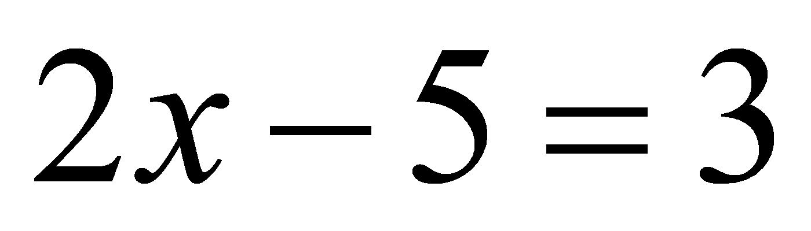
，则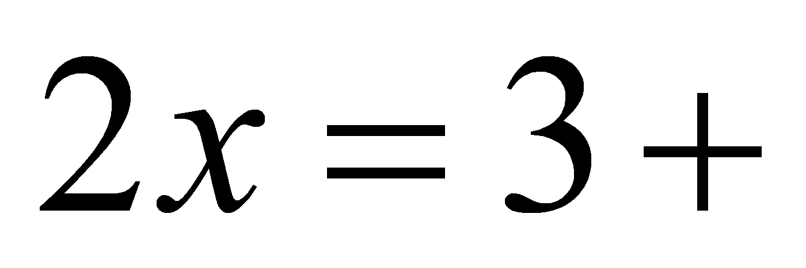
_________．这是根据等式基本性质_________，等式的两边________．
（2）若 ，则
，则
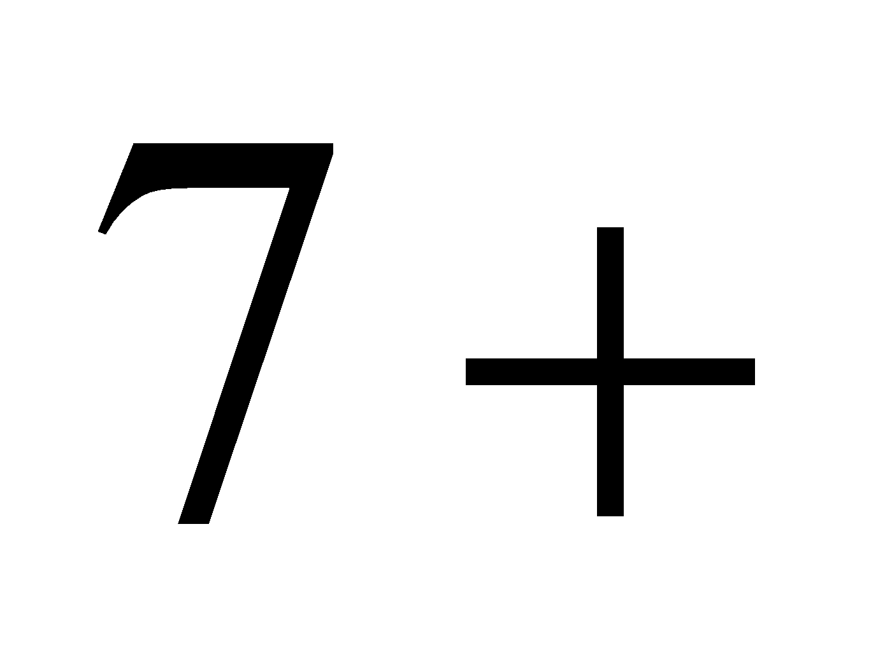
________ ．
．这是根据等式基本性质__________，等式的两边_________．
（3）若 ，则
，则 _______．
_______．
这是根据等式基本性质________，等式的两边_________．
16．（25-26七年级上·全国·课后作业）利用等式的基本性质，将下面的等式变形为 （c是常数）的形式．
（c是常数）的形式．
(1)
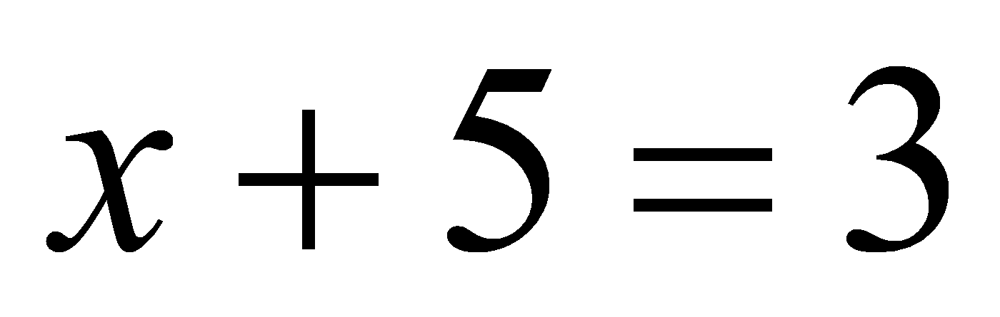
；(2) ；
；
(3) ；
；
(4)
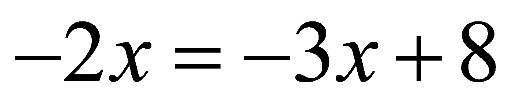
．17．（2024七年级上·全国·专题练习）若方程 是关于x的一元一次方程．
是关于x的一元一次方程．
(1)求k的值；
(2)判断 ，
，
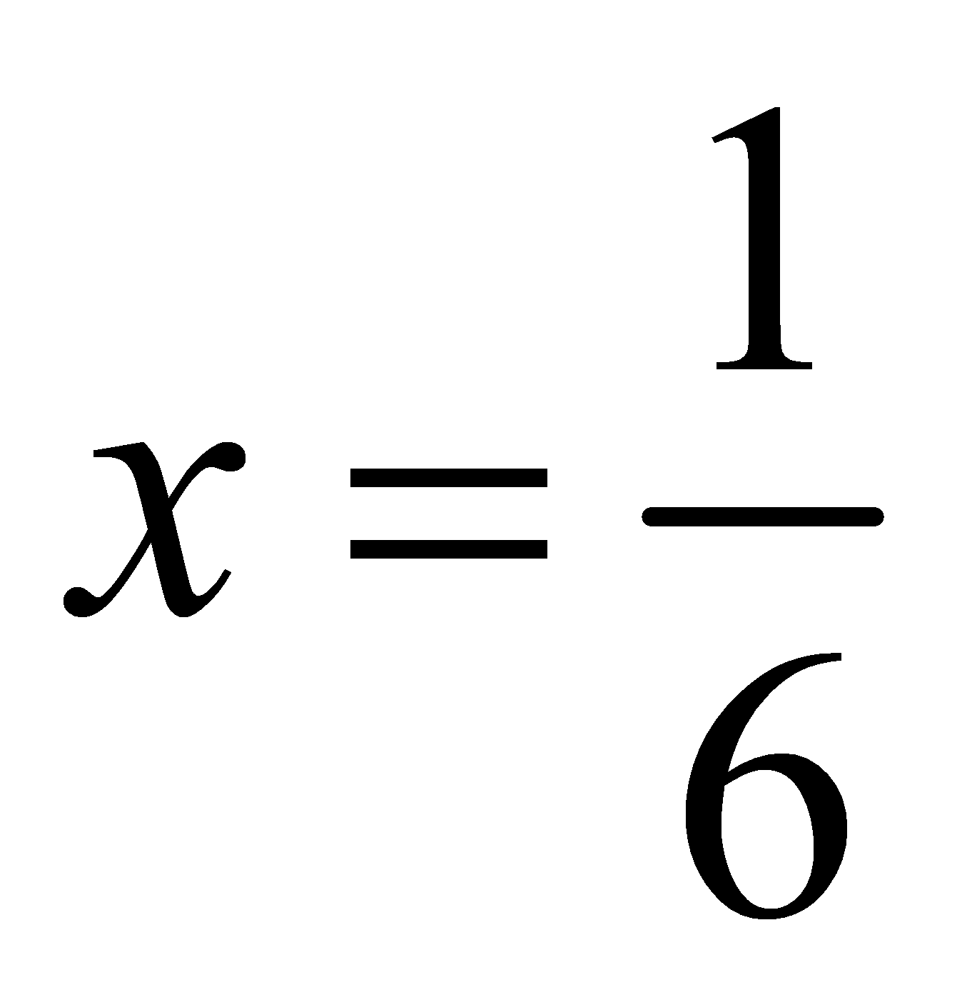
，是否是方程的解．18．（25-26七年级上·全国·课后作业）根据下列情境中的等量关系列出一个等式：
(1)一个正方形花圃的边长为 ，若边长增加
，若边长增加 ，则所得新正方形花圃的周长是
，则所得新正方形花圃的周长是
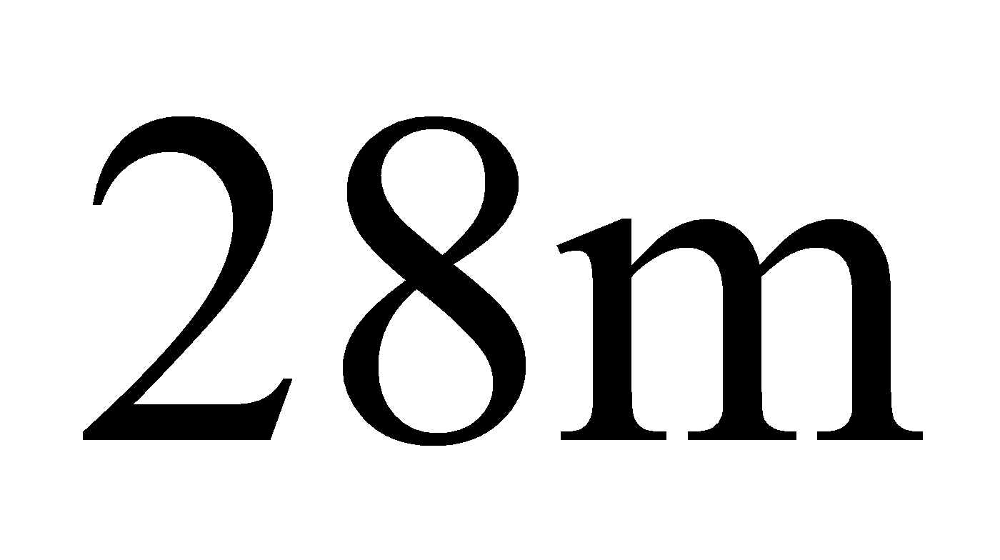
．(2)长方形的长为 ，宽为
，宽为 ，面积为
，面积为
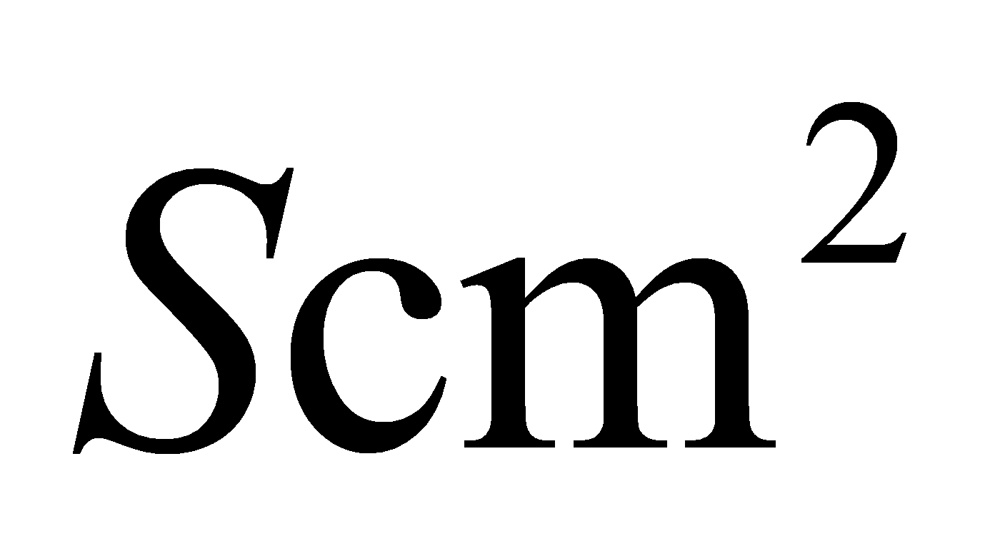
；(3)某商品标价为x元，打八折后再降价12元，售价为108元；
(4)小华去文具店，买x支铅笔和y本笔记本共花12元，已知一支铅笔2元，一本笔记本3元．
19．（25-26七年级上·全国·课后作业）已知关于的方程 是一元一次方程．
是一元一次方程．
(1)求的值．
(2)请判断 和是否为方程的解．
和是否为方程的解．
(3)求 的值．
的值．
20．（23-24七年级上·江苏盐城·期中）数学课本上有这样一道题“如果代数式 的值为
的值为 ，那么代数式
，那么代数式 的值是多少？”小明同学解题过程如下：
的值是多少？”小明同学解题过程如下：
解：原式
因为 ，所以原式
，所以原式
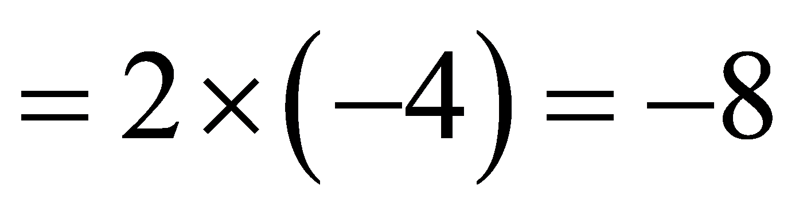
．小明同学把 作为一个整体进行代入求值，像这样的求解方法称为“整体思想”，这是数学解题中的一种重要思想方法，它在多项式的化简求值与解方程中应用极为广泛．请仿照上面的解题方法，完成下面问题：
作为一个整体进行代入求值，像这样的求解方法称为“整体思想”，这是数学解题中的一种重要思想方法，它在多项式的化简求值与解方程中应用极为广泛．请仿照上面的解题方法，完成下面问题：
【尝试应用】
（1）已知a、b互为相反数，m、n互为倒数，则
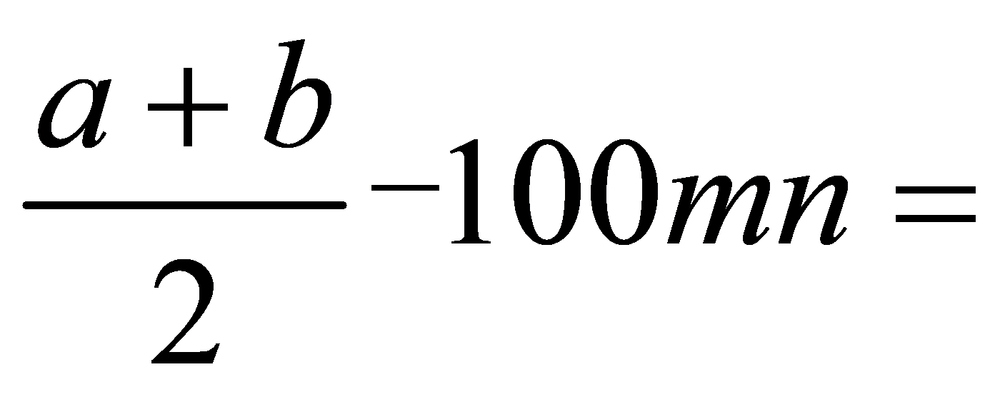
______．（2）已知，当，
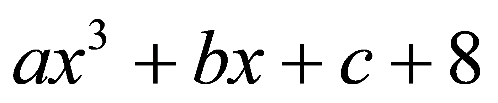
的值是2023；当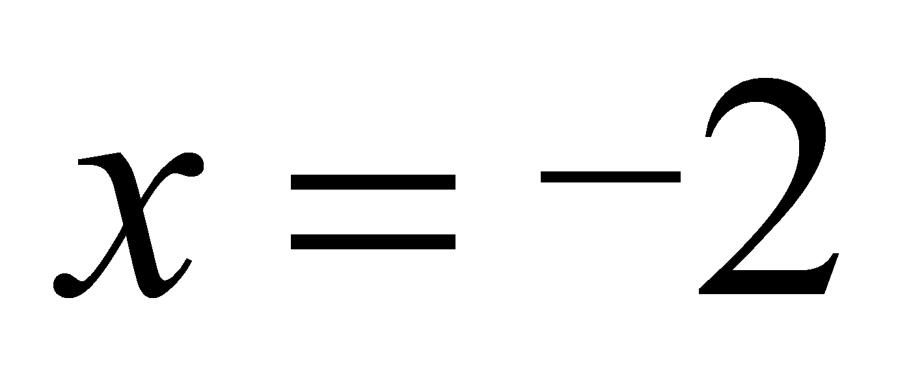
时，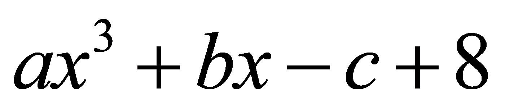
的值是____．【拓展提高】
（3）已知
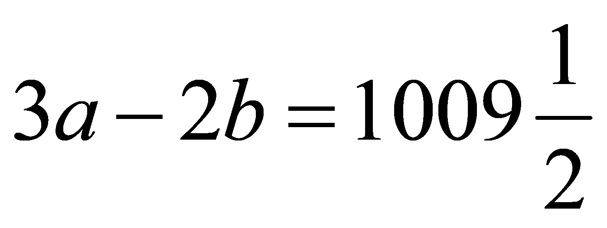
， ，
， ，求
，求 的值．
的值．（4）关于x的一元一次方程 的解
的解 ，解关于y的一元一次方程
，解关于y的一元一次方程 ．
．